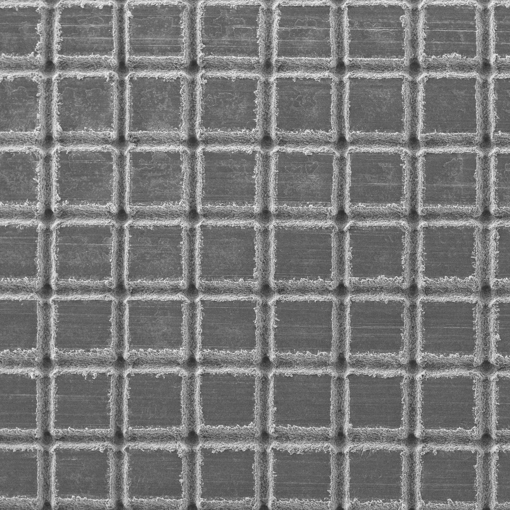
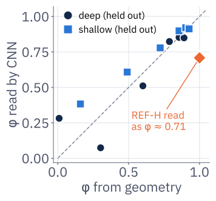
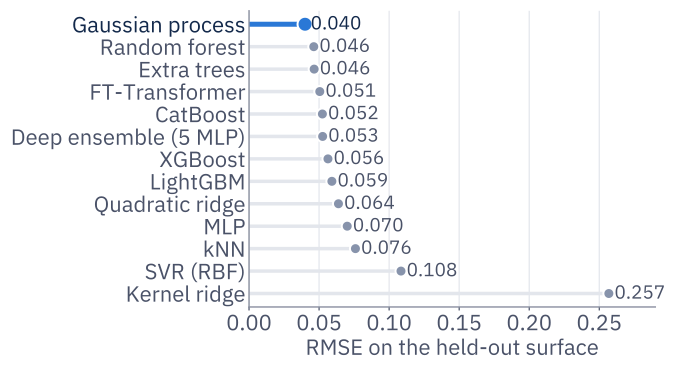
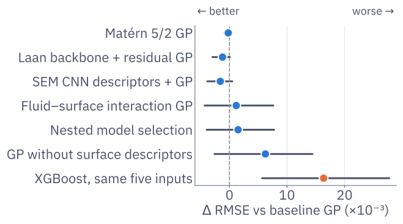
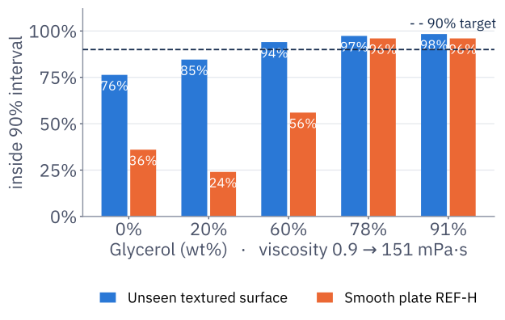
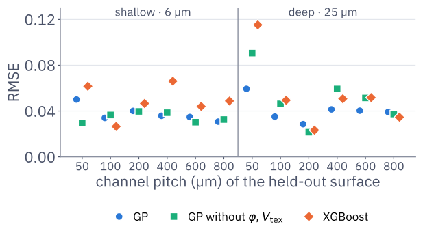
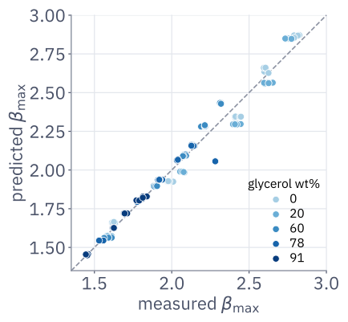

1The question
Droplet-impact models are usually scored on random splits, where every surface is in training. Surface design needs the opposite: a prediction before the surface is made.
Public dataset of Može et al. [1], University of Ljubljana: nanosecond-laser channels on aluminium 1050A, 5,000 fps imaging. Target: maximum spreading βmax = Dmax/D0.
2Reading the surface from SEM

D200 · 43× REF-H · 43×
REF-H · 43× D200 · 350× · rough track, smooth plateau
D200 · 350× · rough track, smooth plateauPlateaus between laser tracks look like the smooth plate. Track widths from SEM (≈45 µm deep, 30 µm shallow) give every surface two descriptors:
Textured φ runs from 0.01 (D50) to 0.93 (S800); REF-H is simply φ = 1. Invented spacing/depth codes moved REF-H error by up to 0.022; with φ, ±10 µm in track width moves it by at most 0.005.
3From SEM image to prediction

4Physics inputs
Recomputed Re and We match the dataset to 5×10−7; Oh adds nothing new. The Laan scaling law [3] (P = We Re−2/5) was derived on wettable surfaces: here it reaches only R² = 0.71 and misses unseen surfaces by 11% on average.
5Leakage-safe evaluation
Each condition was repeated five times, so a random split puts near-identical twins in train and test.
Inputs for every model: ln Re, ln We, ln D0, φ, Vtex; target ln βmax. A change is accepted only if its 95% interval, from resampling whole surfaces, excludes zero.
613 models, one test

Gaussian process (Matérn 3/2, one length scale per input): 29% lower error than XGBoost on unseen surfaces (95% CI of difference 0.006–0.028). Every learner's hardest surface is D50, the densest texture.
7What did not help

Paired surface-bootstrap 95% intervals (4,000 draws). Only XGBoost is significantly different (worse). The Laan law alone is off the scale (+210×10−3).
A Laan-law backbone, other kernels, nested selection and SEM-CNN descriptors each change the error by under 0.002. Removing φ and Vtex: 0.040 → 0.046 (REF-H 0.059 → 0.069), mostly on D50; with 12 surfaces, a hint, not proof. The simple GP stays.
8Knowing when not to trust it

On unseen surfaces, 90.1% of impacts fall inside the 90% interval (84–96% per surface; 92.6% with nested calibration). But one noise level does not fit all fluids: 76% for water, 98% for 91 wt% glycerol. Thin liquids feel the surface more. The OOD check flags D50 and S50, the hardest surfaces.
9Surface by surface

D50 (φ = 0.01, the edge of the range) is hardest for every learner. The descriptors cut its error from 0.091 to 0.059, but hurt on S50 and D200.
10Smooth-plate stress test

★ Take-aways
- Judge droplet models on unseen surfaces. Random splits hide the gap.
- Describe surfaces with quantities every surface has: the plateau fraction φ makes the smooth plate the limit of the textured family.
- A Gaussian process beats 12 alternatives on unseen surfaces (0.040); physics backbones and bigger models add no significant gain.
- Intervals are calibrated on average, not per fluid, and fail on a different wettability. Say so on the tool.